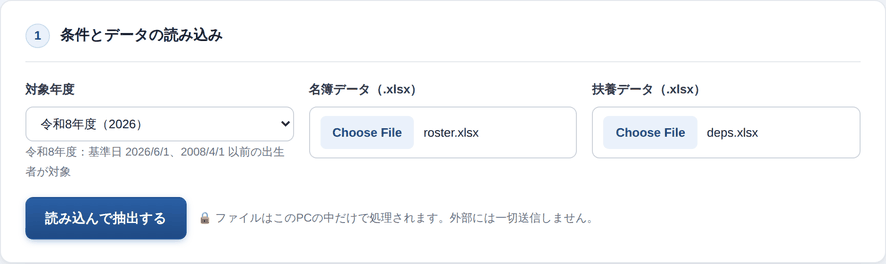
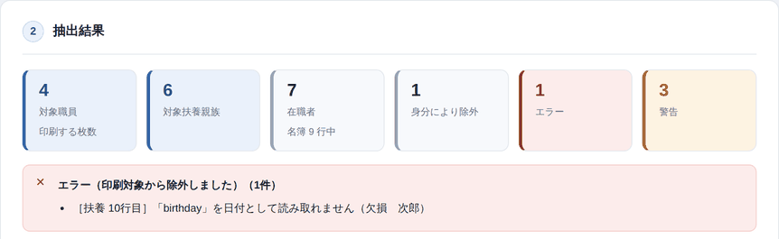
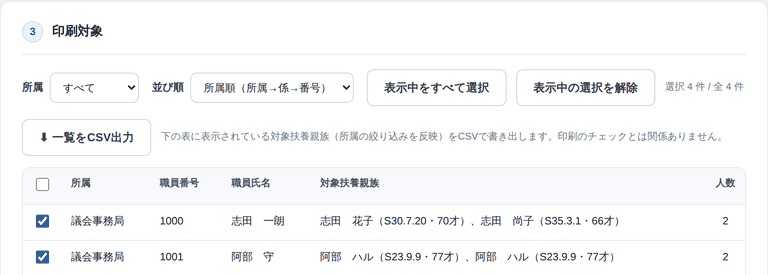
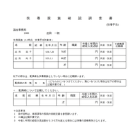

扶養手当／陸前高田市 総務部総務課 職員係 庁内利用専用
人事システムの名簿データと給与システムの扶養データを読み込ませると、 扶養手当の対象になる職員を自動で抽出し、職員ごとに1枚ずつ「扶養親族確認調査書」を 印刷できます。氏名・生年月日・年齢は印字済みです。
インストールは不要。フォルダ内の index.html をダブルクリックして
Microsoft Edge で開くだけです。読み込んだExcelはこのPCの中だけで処理し、外部に送信しません。
.xlsx で保存.xlsx で保存対象年度を選び（通常は今年度のまま）、名簿データと扶養データの
.xlsx を選んでから、「読み込んで抽出する」を押します。
3つがそろうまでボタンは押せません。


| 表示 | 意味とすること |
|---|---|
| エラー（赤） | 生年月日が読めないなど、データが壊れている。その行は印刷されません。元データを直すか、手書きで補ってください |
| 警告（黄） | 印刷対象外にした人、重複している人など。内容を読み、対象外で良いか確認してください（赤い枠の下に黄色で表示されます） |
| お知らせ（青） | 設定に無い身分を、念のため対象に含めた。対象外にすべき身分なら担当者に設定変更を依頼してください |

| 操作 | 内容 |
|---|---|
| 所属 | 特定の課だけを表示・印刷したいときに選びます |
| 並び順 | 所属順＝所属ごとに仕分けて配るとき。職員番号順＝名簿やシステムと突き合わせるとき。一覧・印刷・CSVすべてに同じ並びが反映されます |
| チェックボックス | 外した人は印刷されません（既定は全員オン） |
| 一覧をCSV出力 | 表の内容をExcelで開ける形で保存（確認用・記録用）。印刷のチェックとは無関係で、表に表示中の行がすべて出ます |
「印刷プレビューを作る」→「🖨 印刷する」でブラウザの印刷ダイアログが開きます。 下の4項目を必ず設定してください。既定のままだと枠線がずれ、日付やページ番号が余計に印刷されます。
| 項目 | 設定 |
|---|---|
| 用紙 | A4・縦 |
| 余白 | なし |
| 倍率 | 100%（「ページに合わせる」にしない） |
| ヘッダーとフッター | オフ |

| こうなったら | 原因と対処 |
|---|---|
| デザインが崩れ、年度のプルダウンが空 | ZIPを展開せずに中の index.html を直接開いています。
ZIPを右クリック →「すべて展開」→ 展開先の index.html を開き直してください |
| 「読み込んで抽出する」が押せない | 年度・名簿データ・扶養データの3つがそろっていません。ファイル名が表示されているか確認 |
| 「必要な列がありません」と出る | 見出し行が消えている、または別のデータです。準備の手順からやり直してください |
| 対象者が思ったより少ない | 次をすべて満たす人だけが対象です。在職／身分が「パート（時間額）（日額）」でない／扶養手当の対象（手当月額が0円でない）／その年度の6月のデータ／生年月日が画面表示の上限以前 |
| 印刷すると枠がずれる・2枚に分かれる | 印刷ダイアログの設定です。余白「なし」・倍率100%・ヘッダーとフッターをオフを確認 |
| 画面の見た目や動きが人と違う | 配布版が古い可能性。右上のバージョン番号を見比べ、Ctrl+F5 でも変わらなければ最新のZIPを配り直してもらう |
docs/spec.md、設定の変更は README.md を参照してください。
2 / 2